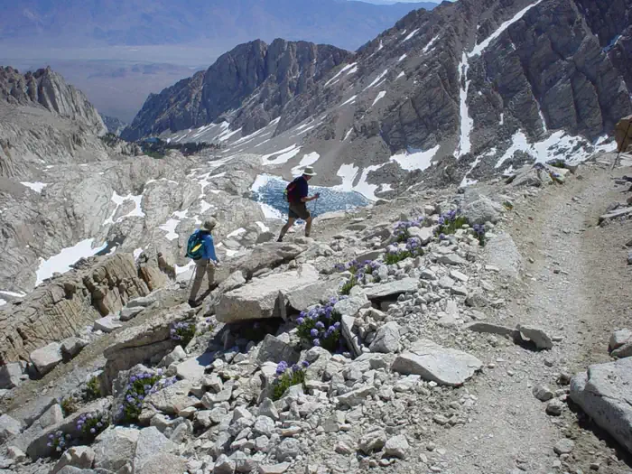
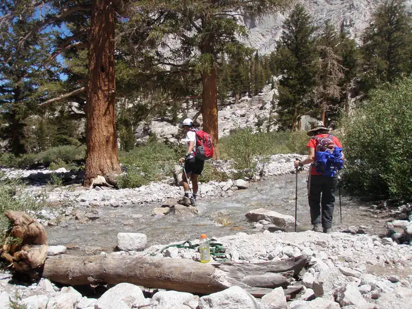
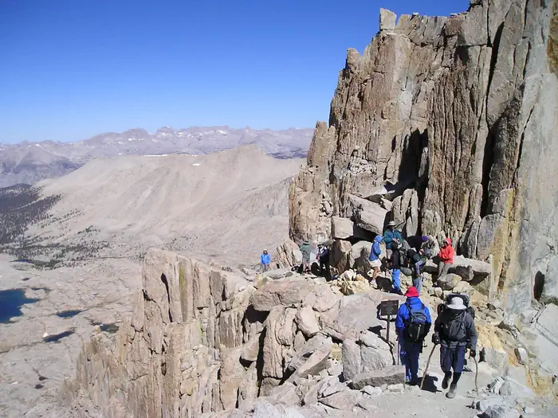

Plan the Main Trail as an altitude day, not a casual hike.
The Mount Whitney Trail starts at Whitney Portal, climbs more than 6,200 ft, reaches the summit in Sequoia National Park, and returns the same way for most day hikers. The trail is straightforward when dry, but the elevation, exposure, darkness, weather, and descent make it a serious mountain objective.
8,360 ft, about 13 miles west of Lone Pine. Expect night starts, bear activity, full parking, and cold pre-dawn sorting.
About 12,000 ft. A common overnight camp and a useful place to reassess wind, energy, water, and altitude symptoms.
Roughly 13,600 ft. From here the route traverses west-side terrain before the final summit push.
Highest point in the lower 48. Take the moment, then start managing the long descent immediately.

Do not mix this plan with the Mountaineers Route.
Main Trail
The classic Whitney Portal trail used by most day hikers. Dry-season travel is usually non-technical, but still long, high, and committing.
Mountaineers Route
Different approach via the North Fork of Lone Pine Creek. It has different terrain, permit context, hazards, and routefinding demands.
Snow season
If snow or ice is present, bring the skills and equipment for winter mountain travel or choose another date.
Break the climb into decision points.
Treat these as planning anchors, not navigation instructions. Carry a real map, downloaded offline maps, headlamp margin, and enough judgment to turn around before the mountain decides for you.
Whitney Portal, 8,360 ft
Start organized. Bear-proof food storage, permit, pack-out kit, water plan, headlamp, layers, and turnaround time should all be settled before leaving the lot.
Stay on the Main Trail
Early junctions can matter in the dark. Confirm you are not drifting toward the North Fork / Mountaineers Route approach.
Lone Pine Lake and Outpost Camp
Use the lower basin to check pace, temperature, and altitude response. Overnight hikers need the proper Whitney Trail overnight permit for camping.
Mirror Lake, Trailside Meadow, Trail Camp
Approach the high basin deliberately. Filter or treat water, watch for fragile areas, and avoid camping on vegetation.
Switchbacks and cables
The switchbacks above Trail Camp are exposed to wind, ice, solar heating, and fatigue. If snow or ice blocks the trail, reassess equipment and ability honestly.
Trail Crest and west-side traverse
The climb is not over at Trail Crest. Watch weather, wind, clouds, snow patches, group spacing, and whether everyone can still descend safely.
Summit hut and summit plateau
Protect energy and temperature. Take photos, eat, drink, check the clock, and leave before the descent margin gets thin.
Descend the same way
Most incidents happen when people are tired, late, dehydrated, or altitude-sick. Keep the team together all the way back to Whitney Portal.


Check the summit, the trailhead, and the trend.
Whitney weather can change the plan quickly: wind on the crest, thunderstorm timing, smoke, heat near Lone Pine, cold pre-dawn starts, and snow or ice on the switchbacks all matter.
Whitney is permit planning plus mountain planning.
A wilderness permit is required year-round to visit Mount Whitney. Day use covers one day only, midnight to midnight. Overnight permits for the Mount Whitney Trail cover multi-day trips starting on the classic Main Trail.
- Lottery: Recreation.gov lists lottery results on March 15 and a claim deadline of April 21 for awarded reservations.
- After lottery: unclaimed dates open for reservations on April 22, according to Recreation.gov.
- Print deadline: day-use permits can be canceled as no-show unless printed before noon one day before entry.
- Bears: remove food and scented items from vehicles at Whitney Portal and use the bear-proof lockers.
- Waste: there are no restrooms along the trail. Pack out solid human waste and paper.
- Cell service: do not rely on a phone for communication or navigation.
Choose a schedule that respects altitude.
Single-day climb
Two-day backpack
Three-day backpack
Train the day before you need the day.
Whitney rewards boring competence: altitude pacing, early starts, steady eating, water discipline, warm layers, foot care, and the willingness to turn around while descent still looks easy.
- Acclimate before the climb when possible. Do not discover your altitude response above Trail Camp.
- Carry headlamp plus backup light or batteries. Many parties move in the dark both directions.
- Set a turnaround time before leaving the trailhead.
- Know altitude illness symptoms and make conservative decisions if they appear.
- Bring enough water capacity and treatment; confirm current water availability locally.
- Pack layers for both desert heat and crest-level wind/cold.
- Carry traction, ice axe, and the skill to use them when snow or ice remains.
- Use footwear and socks already proven on long descents.
- Keep the group together. Split parties create rescue and decision problems.
- Pack out all trash, food waste, and human waste.
Expect the climb to feel long twice.
The ascent is long, and the descent can feel longer. Break the route into known sections: Portal, lower lakes, Trail Camp, switchbacks, Trail Crest, traverse, summit, and every one of those in reverse.
- Use small goals: the next switchback, next snack, next layer check, next water check.
- Do not confuse seeing the summit area with being nearly done.
- If someone is slowing sharply, solve that early rather than above Trail Crest.
- Keep enough focus for the final miles below Lone Pine Lake.
Make the descent part of the summit plan.
Plan for knees, feet, altitude fatigue, darkness, and slower party members on the way down.
Afternoon storms, smoke, wind, soft snow, dehydration, and navigation mistakes all get sharper when the team is tired.
Have food, electrolytes, dry layers, and a realistic plan for sleep or driving after the climb.